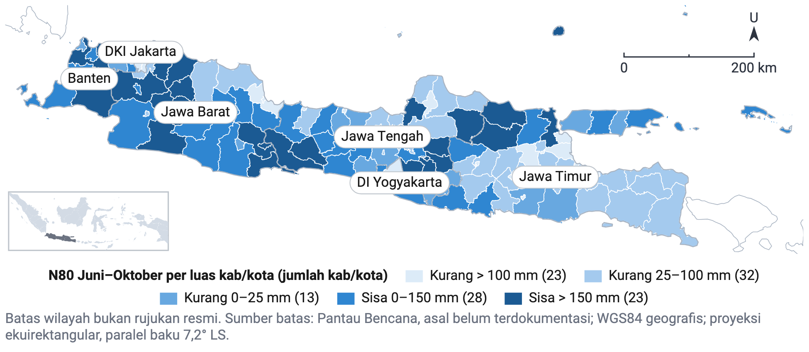
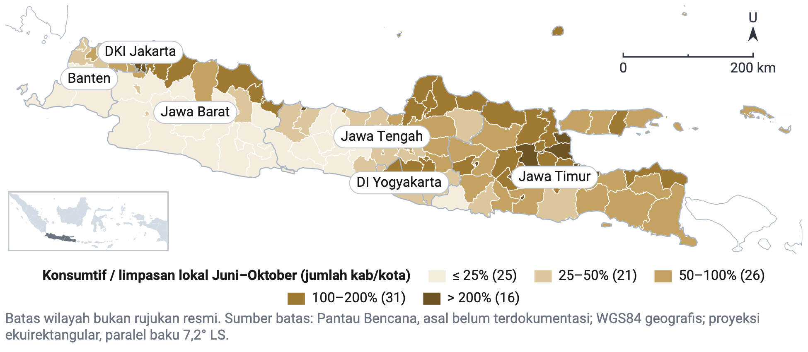
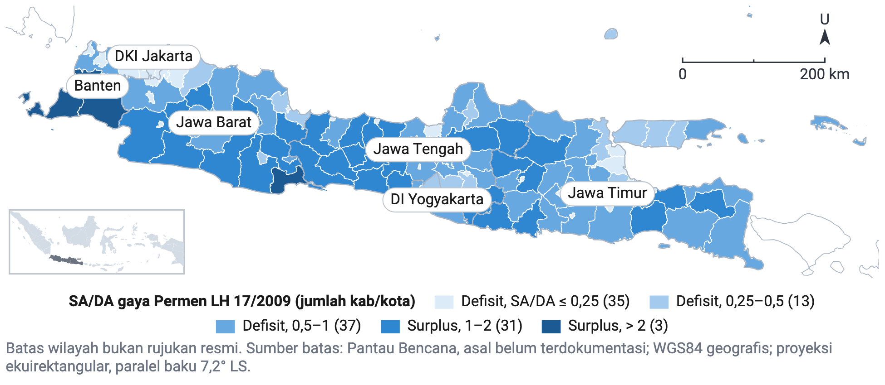
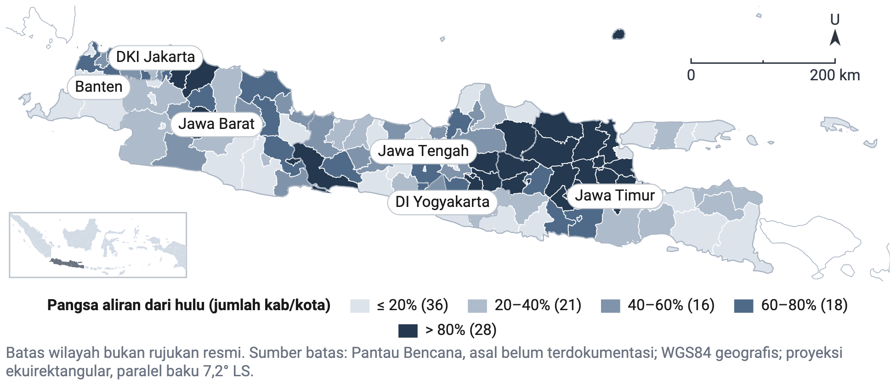
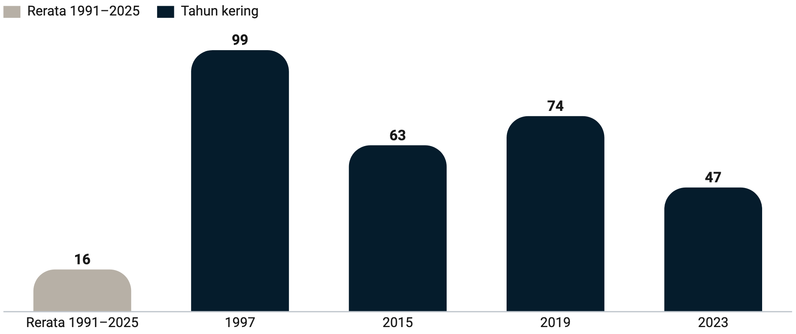
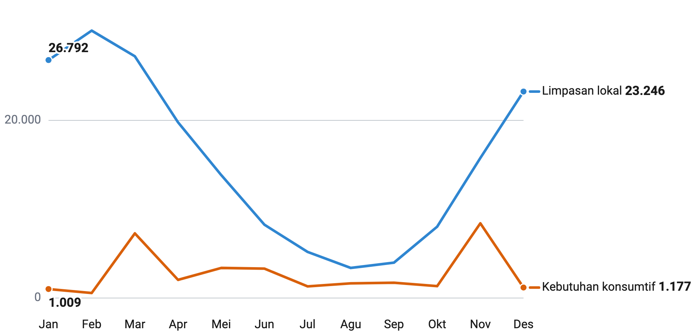

Lembar bukti visualGambar uji 1 Neraca air andalan Juni–Oktober (N80) per satuan luas kab/kota di Pulau Jawa, kebutuhan 2025 dan iklim 1991–2025 (mm)
Sumber: Pengolahan data Pantau Bencana, model neraca air kajian ini; estimasi model (batas tetap, nol memisahkan kurang dan sisa)
Catatan: N80 = persentil ke-20 total Juni–Oktober 35 tahun; indikasi urutan, aliran kemarau belum lolos validasi.
Mesin: peta, G19, mode docx, 16,5 x 7,17 cm
Gambar uji 2 Kebutuhan konsumtif dibanding limpasan lokal Juni–Oktober per kab/kota di Pulau Jawa, rerata 1991–2025 dan kebutuhan 2025 (%)
Sumber: Pengolahan data Pantau Bencana, model neraca air kajian ini; estimasi model (batas tetap, 100% = kebutuhan sama dengan limpasan lokal)
Catatan: Limpasan lokal tanpa aliran masuk dari hulu; irigasi = kebutuhan potensial dikurangi aliran balik.
Mesin: peta, G19, mode docx, 16,5 x 7,17 cm
Gambar uji 3 Rasio ketersediaan dan kebutuhan air gaya Permen LH 17/2009 per kab/kota di Pulau Jawa, iklim 1991–2025 dan penduduk 2025
Sumber: Pengolahan data Pantau Bencana, model neraca air kajian ini; bukan status resmi (batas tetap, SA/DA = 1 memisahkan defisit dan surplus)
Catatan: SA = limpasan lokal model; DA = penduduk x 1.600 m³/kapita/tahun; rasio di bawah 1 = defisit.
Mesin: peta, G19, mode docx, 16,5 x 7,17 cm
Gambar uji 4 Pangsa aliran masuk dari kab/kota hulu dalam ketersediaan air tahunan per kab/kota di Pulau Jawa, rerata 1991–2025 (%)
Sumber: Pengolahan data Pantau Bencana, penelusuran aliran HydroBASINS level 9; estimasi model (batas tetap seperlima)
Catatan: Ketersediaan = limpasan lokal + aliran masuk dari hulu, sesudah pemakaian di hulu.
Mesin: peta, G19, mode docx, 16,5 x 7,17 cm
Gambar uji 5 Kab/kota dengan neraca Juni–Oktober negatif per skenario iklim, rerata 1991–2025 dan tahun kering 1997, 2015, 2019, 2023
Sumber: Pengolahan data Pantau Bencana, model neraca air kajian ini; estimasi model, kebutuhan 2025
Catatan: Bias tahun kering bergantung tahun: 1997 melebih-lebihkan kekurangan, 2019 dan 2023 meremehkannya di sebagian muara.
Mesin: batang, G1, mode docx, 16,5 x 6,93 cm
Gambar uji 6 Limpasan lokal dan kebutuhan konsumtif bulanan Pulau Jawa, rerata 1991–2025 dan kebutuhan 2025 (juta m³)
Sumber: Pengolahan data Pantau Bencana, model neraca air kajian ini; estimasi model
Mesin: garis, di luar tabel B5.10: Dua seri dua belas bulan untuk membandingkan musim pasokan dan kebutuhan; batang kelompok tidak tersedia di perender, mode docx, 16,5 x 7,92 cm